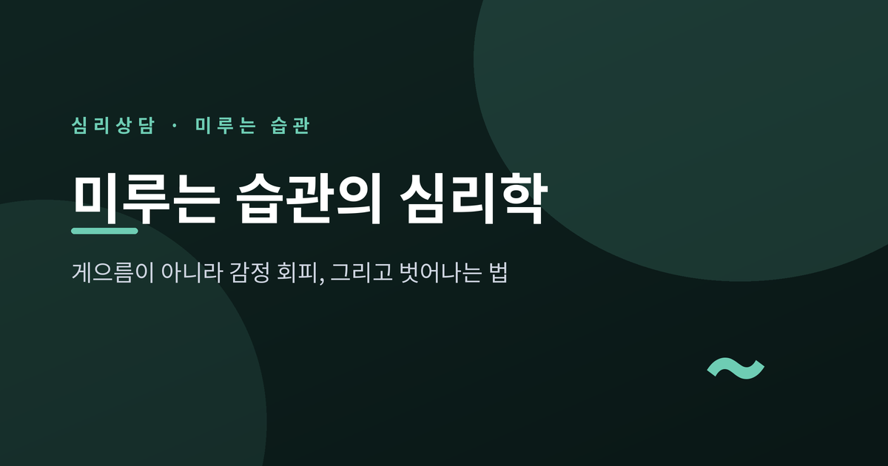
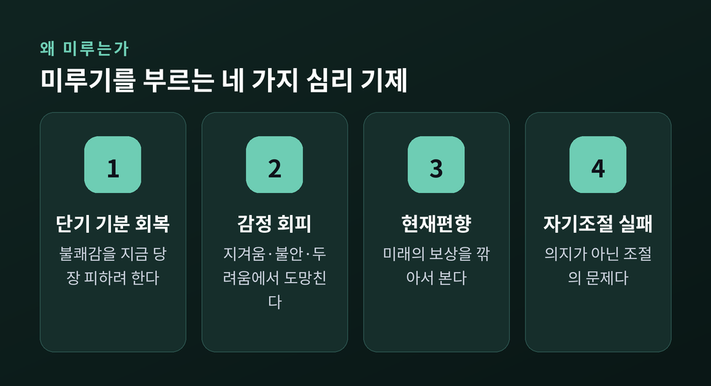
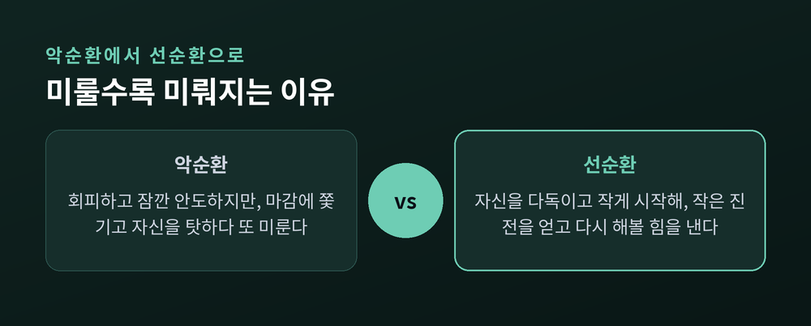
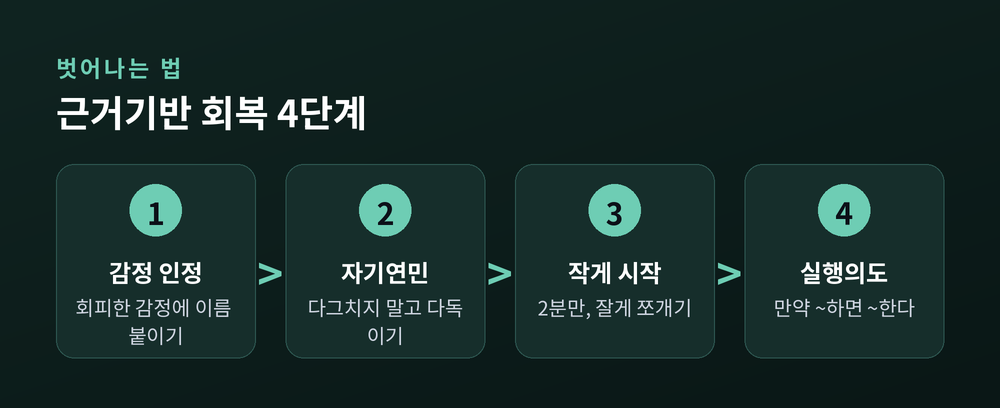
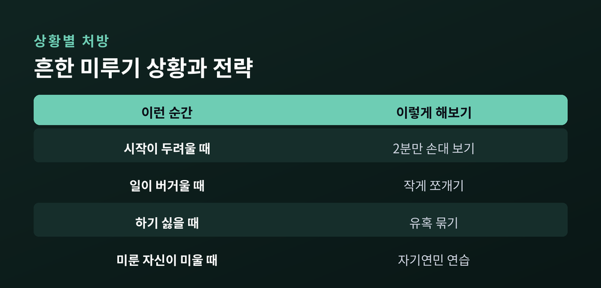

미루는 습관의 심리학 — 게으름이 아니라 감정 회피, 그리고 벗어나는 법

미루는 습관을 두고 스스로를 게으르다고 탓해 본 분들을 위해 이 글을 준비했습니다. 심리학은 미루기를 조금 다르게 봅니다. 오늘은 우리가 왜 미루는지, 그 심리 기제를 짚어 보고 근거 있는 회복 방법까지 차분히 정리해 보겠습니다.
먼저 한 가지만 미리 말씀드립니다. 여기서 다루는 것은 특정 개인의 사례가 아니라, 여러 연구에서 반복 확인된 일반적인 심리 패턴입니다.
미루기는 게으름이 아니라 자기조절의 문제입니다
심리학에서 미루기는 “하려고 마음먹었고, 미루면 손해라는 것을 알면서도, 자발적으로 그 일을 뒤로 미루는 것”으로 정의됩니다.
의지가 약해서가 아닙니다. 하겠다는 의도는 분명히 있습니다.
미루기 연구의 고전으로 꼽히는 스틸(Steel)의 2007년 메타분석은 미루기를 아예 “자기조절 실패의 전형”이라고 이름 붙였습니다. 게으름이라는 성격의 문제가 아니라, 지금 이 순간의 자신을 다스리는 조절 장치가 특정 상황에서 무너지는 문제라는 뜻입니다.
같은 연구에서 미루기를 강하게 예측하는 요인으로 과제 혐오감, 과제까지 남은 시간, 낮은 자기효능감, 그리고 충동성이 꼽혔습니다. 하나같이 “지금 이 일이 얼마나 하기 싫게 느껴지는가”와 맞닿아 있습니다.
예전에는 미루는 사람을 두고 “노력이 부족하다”고 말했습니다. 지금의 심리학은 “감정을 다루는 방식의 문제”라고 말합니다.
진짜 이유는 감정 회피입니다
그렇다면 무엇을 조절하지 못하는 걸까요. 최근 연구가 지목하는 답은 감정입니다.
시로이스(Sirois)와 피칠(Pychyl)은 미루기를 “장기 목표보다 단기적인 기분 회복을 우선하는 경향”으로 설명합니다. 영어로는 short-term mood repair, 즉 당장의 기분을 손보는 일을 앞세운다는 뜻입니다.
과정은 이렇습니다. 해야 할 일이 지루하거나 불안하거나 버겁게 느껴지면, 그 일은 불쾌한 감정을 불러옵니다. 우리는 그 불쾌감에서 당장 벗어나고 싶어집니다. 그래서 일을 미룹니다. 미루는 순간 불편한 감정이 잠시 가라앉습니다.
미루기는 이렇게 일종의 감정 조절 전략으로 작동합니다. 다만 서툰 전략입니다.
실험도 이를 뒷받침합니다. 부정적인 기분을 유도한 참가자들은 더 오래 미뤘습니다. 감정을 다루는 능력이 낮은 사람일수록 미루기에 더 취약했습니다.

여기에 하나가 더 얹힙니다. 시간을 대하는 우리의 편향입니다.
사람은 먼 미래의 보상보다 당장의 보상을 크게 칩니다. 이를 현재편향이라 하고, 미래의 가치를 깎아 인식하는 것을 시간할인이라 합니다. 실제 연구에서 미래 보상을 많이 깎는 사람일수록 더 많이 미루는 경향이 확인됐습니다.
미루기는 결국 “미래의 나”에게 짐을 떠넘기는 일입니다. 지금의 내가 편해지려고, 아직 오지 않은 나에게 부담을 미룹니다. 문제는 그 미래의 나 역시 결국 나라는 점입니다.
연구자들은 이를 자기연속성의 실패라고 부릅니다. 우리는 미래의 자신을 마치 남처럼 여기고, 그래서 그 사람에게 부담을 넘기는 데 죄책감을 덜 느낍니다. 미룰 때 마음이 가벼운 것도, 밀린 일을 마주할 사람이 지금의 내가 아니라고 착각하기 때문입니다.
여기서 미루기가 주는 안도의 정체가 드러납니다. 그 안도는 진짜입니다. 다만 잠깐입니다. 단기적인 기분 회복에 매달릴수록, 정작 이루고 싶던 장기 목표는 조금씩 멀어집니다.
미룰수록 더 미루게 되는 악순환
미루기가 까다로운 이유는 스스로를 키우는 고리를 만들기 때문입니다.
불쾌한 과제를 만나면 우리는 회피합니다. 잠깐 안도합니다. 그러나 마감은 다가오고 압박은 커집니다. 그리고 미룬 자신을 탓하기 시작합니다. “또 이랬네.” 죄책감과 수치심이 밀려옵니다.
문제는 이 자기비난이 그 자체로 새로운 불쾌한 감정이라는 데 있습니다. 그 감정을 다시 피하려고, 우리는 또 미룹니다.

완벽주의도 여기에 얽힙니다. 다만 결이 갈립니다. “남이 나에게 높은 기준을 요구한다”고 느끼는 부적응적 완벽주의는 미루기를 키웁니다. 실패와 평가가 두려워 아예 시작을 미루는 것입니다.
반대로 스스로 기준을 세우는 자기지향적 완벽주의는 오히려 미루기를 줄인다는 연구도 있습니다. 그러니 “완벽주의자는 다 미룬다”는 말은 절반만 맞습니다. 두려움에서 나온 완벽주의가 문제이지, 완벽을 향한 마음 그 자체가 문제는 아닙니다.
벗어나는 법 — 근거 있는 전략들
그렇다면 어떻게 이 고리를 끊을 수 있을까요. 연구가 가리키는 방향은 의외로 부드럽습니다.

첫째, 자신을 다그치는 대신 너그럽게 대합니다. 이를 자기연민이라 합니다. 시로이스의 연구에서 미루기가 잦은 사람은 자기연민이 낮고 스트레스가 높았습니다. 반대로 자기연민이 높은 사람은 취침 미루기 같은 습관이 적었고, 그 이유는 이들이 부정적 기분을 건강하게 가라앉힐 줄 알았기 때문입니다. 자신을 비난하는 채찍질은 미루기를 줄이지 못합니다.
둘째, 회피하려던 감정에 이름을 붙입니다. “나는 지금 이 일이 지겹다”, “사실은 실패가 두렵다”고 인정하는 것만으로 감정의 힘이 약해집니다. 감정 조절 기술을 훈련하자 이후 미루기가 줄었다는 결과도 있습니다.
셋째, 아주 작게 시작합니다. 큰 과제를 작게 쪼개면 압도감이 줄고 첫걸음이 가벼워집니다. UC 산타바바라 연구에서는 2분가량의 짧은 준비가 감정적 저항을 낮췄고, 특히 작은 실행에 작은 보상을 짝지었을 때 동기가 눈에 띄게 더 올랐습니다.
넷째, 실행의도를 세웁니다. “만약 ~하면, 그때 ~한다”는 형태의 구체적 계획입니다. 골위처(Gollwitzer)가 제안한 이 방법은 상황과 행동을 미리 이어 두어, 막상 그 순간이 왔을 때 결심에 드는 에너지를 아껴 줍니다. 미루기에도 도움이 된다는 초기 근거가 쌓이고 있습니다.
다섯째, 유혹을 묶습니다. 하기 싫은 일을 좋아하는 것과 짝짓는 방법입니다. 밀크먼(Milkman)의 연구에서는 재미있는 오디오북을 헬스장에서만 듣게 묶자 사람들의 운동 횟수가 유의하게 늘었습니다. 미루던 서류 정리를 좋아하는 음악이나 커피와 묶어 보는 식입니다.

이 전략들의 공통점은 하나입니다. 의지를 쥐어짜는 대신, 감정과 상황을 먼저 손보는 것입니다.
정리하면 이렇습니다.
미루기는 게으름이 아니라, 불편한 감정을 지금 당장 피하려는 마음에서 옵니다. 그러니 자신을 더 몰아세우는 방식으로는 좀처럼 나아지지 않습니다.
작게 시작하고, 감정을 인정하고, 미룬 자신을 조금 덜 미워하는 것 — 회복은 대개 그 자리에서 시작됩니다.
“미루기는 시간 관리의 문제가 아니라, 감정 관리의 문제입니다.”
한 가지만 덧붙이겠습니다. 미루는 습관이 오래 이어져 일상과 마음을 무겁게 짓누르고, 혼자만의 노력으로 좀처럼 나아지지 않는다면, 전문 상담가나 가까운 심리상담 기관의 도움을 받아 보시길 권합니다. 이 글은 일반적인 심리 이해를 돕기 위한 것이지, 개인의 상태를 진단하거나 처방하기 위한 글이 아닙니다. 필요할 때 손을 내미는 것 역시, 미루지 않아야 할 일 가운데 하나입니다.